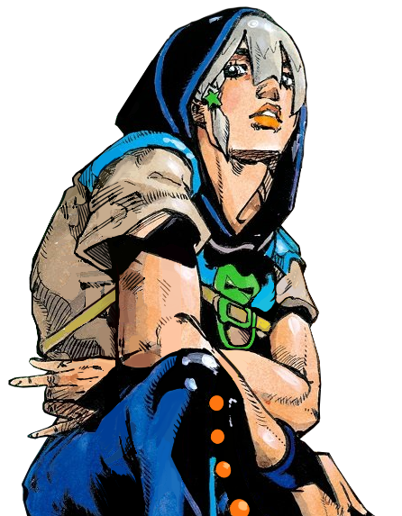
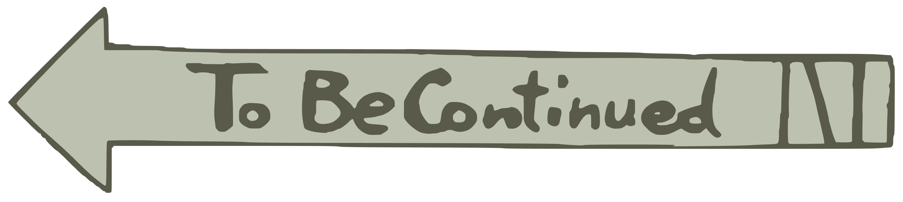

View the Official Site of Shueisha : Here
View the Official Site of Shueisha : Here
November Rain's User. His goal is to become rich by mastering the mechanisms of the world.


Elegant and calm. With Smooth Operators, they can move anything, even license plates or facial features.


His physical strength and his Stand "The Hustle" allow him to grab and steal various items with just his muscles and attach them to his skin.

The Matte Kudasai ! A Stand capable of becoming any object, provided that someone else desires it.


His Stand "Big Mouth Strikes Again" allows him to disguise himself as another person, or blend into the environment.


